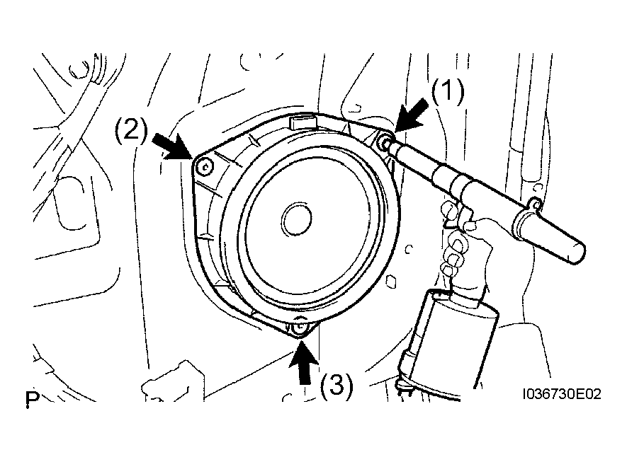

Front No. 1 Speaker: Installation
HINT:
- Use the same procedures for the RH side and LH side.
- The procedures listed below are for the LH side.
- INSTALL FRONT NO. 1 SPEAKER ASSEMBLY LH
- Using an air riveter or a hand riveter, install 3 new strike rivets to the speaker on the front door panel.
HINT:
Install the new strike rivets in the order shown in the illustration.

Courtesy of © TOYOTA, LICENSE AGREEMENT TMS1002NOTE:- Do not pry the rivet with the riveter, as this will cause damage to the riveter and mandrel.
- Confirm that the rivets are seated properly against the speaker. Do not tilt the riveter when installing the rivet to the speaker. Do not leave any space between the rivet head and the speaker.
- Do not leave any space between the speaker and door panel. Firmly hold together the 2 items while installing the rivet.
- Connect the connectors.
- Using an air riveter or a hand riveter, install 3 new strike rivets to the speaker on the front door panel.
- INSTALL FRONT DOOR TRIM BOARD SUBASSEMBLY LH (See REASSEMBLY )
- INSTALL POWER WINDOW REGULATOR MASTER SWITCH ASSEMBLY (See REASSEMBLY )
- INSTALL DOOR PULL HANDLE (See REASSEMBLY )
- INSTALL FRONT DOOR LOWER FRAME BRACKET GARNISH LH (See REASSEMBLY )
- CONNECT CABLE TO NEGATIVE BATTERY TERMINAL